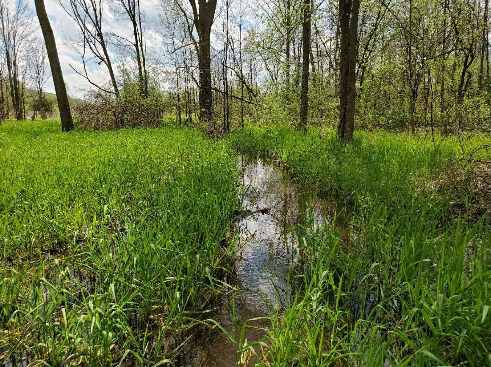
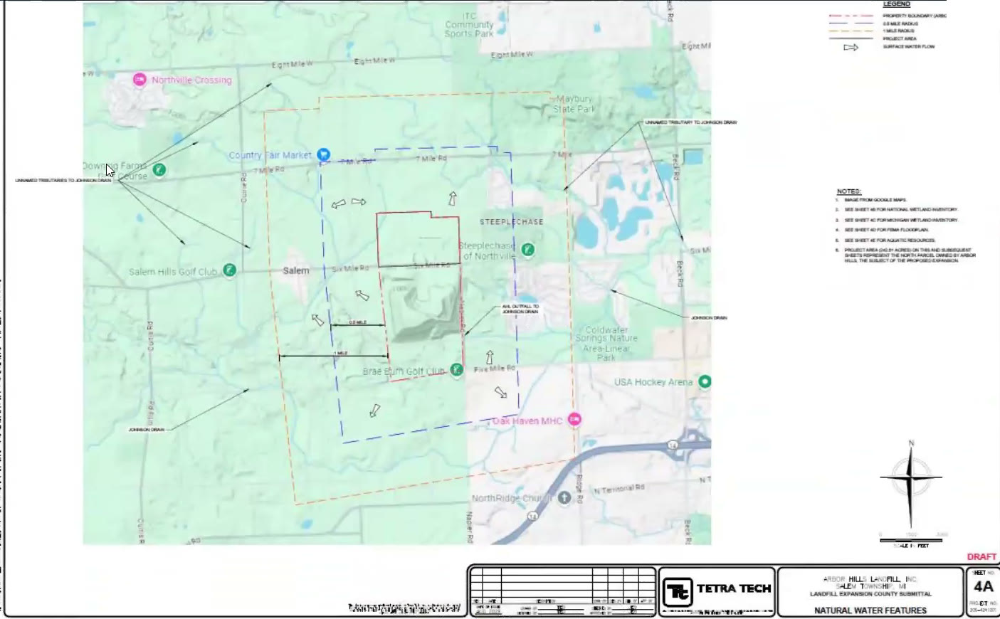
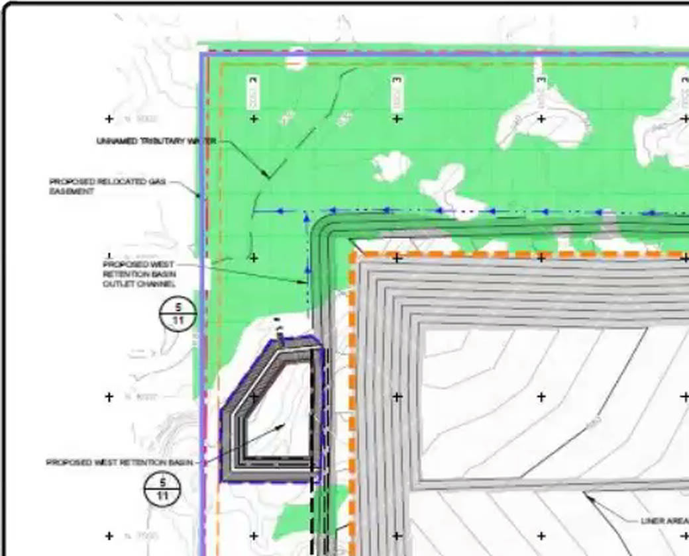
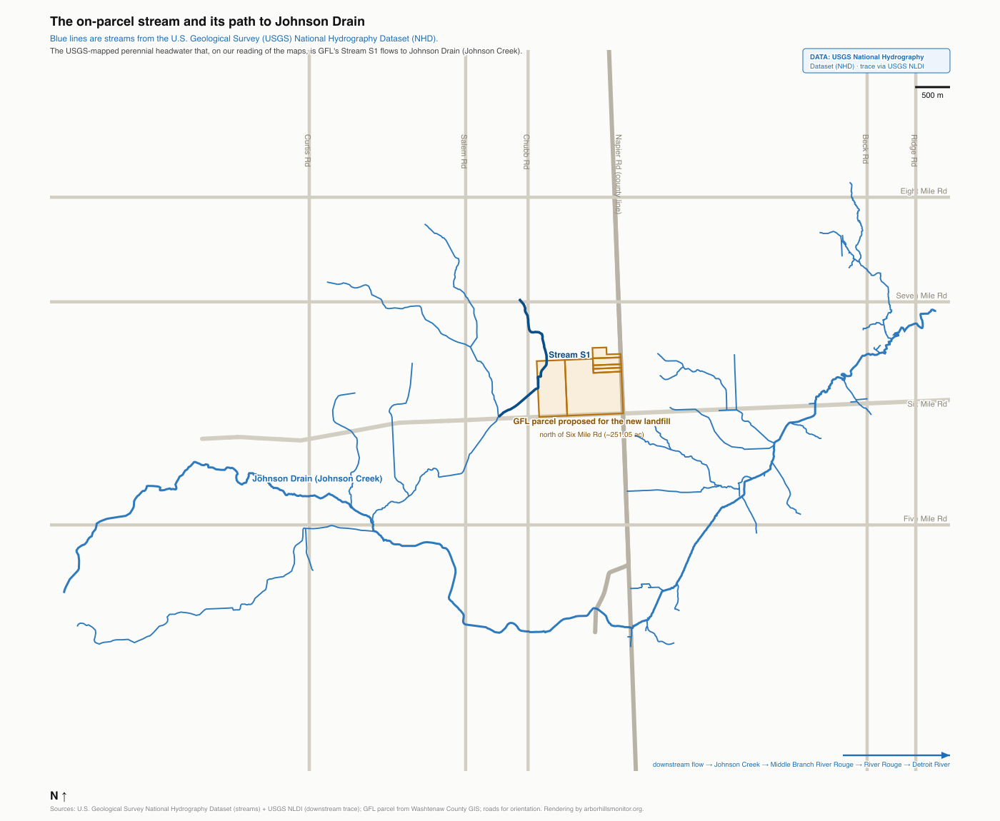
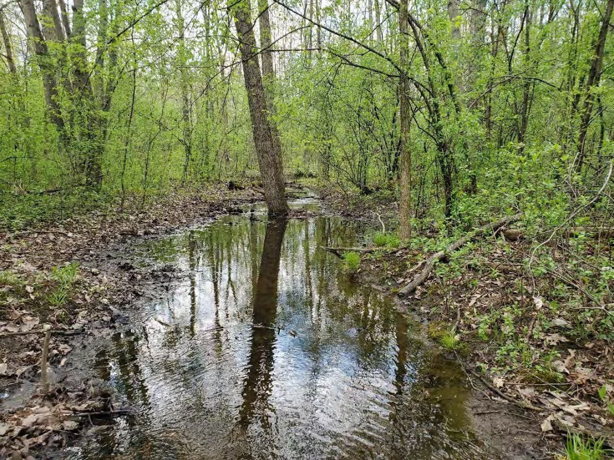
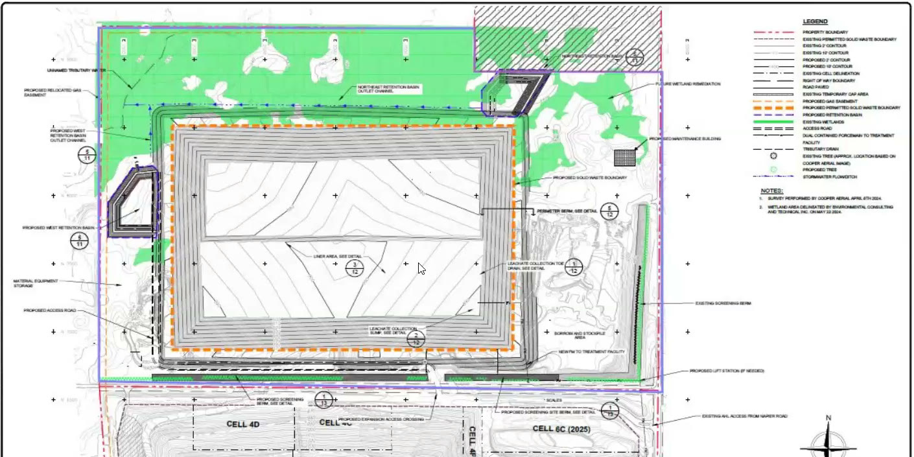

What GFL's filings and the public record show about the watercourse on the site of the proposed new landfill, and where its water flows.

Every statement below is drawn from GFL's filings and the public record; sources are cited in the article that follows.



GFL, through Arbor Hills Landfill, Inc., has asked EGLE for a pre-application meeting on a new landfill north of Six Mile Road in Salem Township, across from the current Arbor Hills Landfill (EGLE submission HQQ-YTC1-YG4V6, August 2026), and EGLE’s Water Resources Division held that pre-application meeting with GFL on October 13, 2026. A pre-application meeting is not a permit application. EGLE’s October 27, 2026 letter says no wetland (Part 303) application had been received. EGLE’s November 23, 2026 follow-up letter to GFL on that meeting says a permit under Part 301 (inland lakes and streams) and Part 303 (wetlands) is required and lists what the application must contain. As of November 24, 2026, no permit application for the project appears in EGLE’s records. GFL's filings describe the project as a northward "expansion"; this page uses "new landfill." GFL's consultant classified two streams on that land as regulated under Part 301, and GFL's materials show a stormwater channel discharging into one of them, Stream S1. Federal hydrography maps that watercourse as a perennial headwater that flows to Johnson Creek, then the Middle Branch of the River Rouge, the River Rouge, and the Detroit River.
This page reports what the documents say. It does not draw conclusions.
GFL's "Additional Information" narrative, dated August 3, 2026, states, under "Stream and Floodplain Impacts":
"The proposed Project will result in one minor stream impact, and no impacts to regulated floodplains. Two regulated streams were delineated on the property, and the Project has largely been designed to avoid impacts to these features. Near the northwest corner of the Project, the NPDES-permitted stormwater channel will discharge into Stream S1... Stream impacts will be localized at that confluence... The design calls for placement of approximately 17 CY of riprap at the confluence..."
The delineation report separately notes "one (1) NHD mapped watercourse is mapped within the Project Area." Together the documents describe two streams, Stream S1 and Stream S2, which GFL’s consultant classified as regulated under Part 301, and a stormwater-channel discharge into Stream S1 at the northwest corner. GFL calls the channel "NPDES-permitted."

GFL characterizes the work as "one minor stream impact" and states that stream impacts "will be localized at that confluence." Its narrative describes the physical work as approximately 17 cubic yards of riprap at the confluence, the single point where GFL's stormwater channel would discharge into Stream S1, with the channel set to match the invert (bed) elevation of Stream S1, below the stream's ordinary high-water mark. Riprap is loose, angular rock placed to dissipate flow energy and armor a discharge point against erosion (scour). The roughly 17 cubic yards is the confluence armoring GFL disclosed: a localized detail at the outfall, not a rock-lined channel running from the landfill to the stream. The full stormwater-channel design (its length and whether it is lined) is not yet fully in the public record.
The public federal record (EPA Enforcement and Compliance History Online / ICIS-NPDES) and the state record (EGLE MiWaters / MiEnviro) show the following NPDES water-discharge permits associated with the Arbor Hills complex:
| Permit | Type | Facility it covers | Discharge point and receiving water |
|---|---|---|---|
| MI0045713 Expired October 1, 2026; administratively continued ("Extended") until EGLE reissues it. Reissuance date: not yet set. |
NPDES individual permit | Arbor Hills Remediation Area, W Five Mile Road frontage (the existing site, south of Six Mile Road; EPA lists the facility at latitude 42.3924) | Treated groundwater from monitoring point 001A through Outfall 001; receiving water an unnamed tributary to Johnson Drain. Per EGLE's permit registry the permit expired October 1, 2026 and is administratively continued while EGLE reviews the reissuance application. |
Violations on record: 3 EGLE letters citing violations (2020–2024):
|
|||
| MIS210766 Expires April 1, 2027, when the statewide industrial stormwater general permit it falls under expires. Renewal date: not yet set. |
Industrial stormwater Certificate of Coverage (under the state general permit) | Arbor Hills Remediation Area, existing site (south of Six Mile Road) | Stormwater from the site's detention-pond system via Outfall 001 to an unnamed tributary of Johnson Drain. Per EGLE's permit registry, in effect June 20, 2023 to April 1, 2027. This is the permit associated with the 2021 PFOS violation (VN-011821). |
Violations on record: 3 EGLE Violation Notices (2021–2024):
|
|||
| HPJ-8MTJ-QJVGE Coverage MIR117157. EGLE's June 9, 2022 letter says it expired June 5, 2024 with county soil-erosion permit SESC2022-0164 unless renewed (renewable through June 8, 2027). Whether it was renewed: not known. |
NPDES stormwater Notice of Coverage (2022) | Construction stormwater coverage at 10599 W. Five Mile Rd. | No individual outfall is listed for it in the federal database. |
| Violations on record: None found in EGLE’s compliance records (MiEnviro, checked September 30, 2026). | |||
The full stormwater and outfall design for the proposed new landfill north of Six Mile Road is not yet in the public record. As of November 24, 2026, GFL has filed only a pre-application (HQQ-YTC1-YG4V6) for that project's water impacts.
Sources: EGLE Remediation-Area permit registry (RA-Permits, retrieved September 10, 2026; permit status and dates rechecked on MiEnviro nSITE October 22, 2026); EGLE Notice of Coverage letter for MIR117157, June 9, 2022; EGLE MiEnviro compliance actions and the violation and compliance letters themselves (Arbor Hills Remediation Area, retrieved September 30 and November 9, 2026); EPA ECHO / ICIS-NPDES (MI0045713, retrieved September 18, 2026); GFL's "Additional Information" narrative, August 3, 2026 (filed by EGLE under pre-application HQQ-YTC1-YG4V6; GFL's document cites submission HQA-WX1H-7R9J4; Monitor Mirror copy).
A GFL representative (from auto-transcript; the official county minutes are authoritative) asked the committee to reconsider the county's 300-foot stream setback:
"...a landfill and many other industrial sites are required to have a stormwater management plan which includes sedimentation basins, which by design and requirement need to have an outfall to a receiving water."
GFL said the site's soils and subsurface conditions do not support an infiltration detention pond, so collected water must be discharged, and described "a small stream that cuts the corner of this property," adding: "the proposed expansion keeps the footprint of the landfill 300 feet from that stream ... that stream carries on to the south."

The mapped stream on GFL-owned land north of Six Mile Road was traced through the USGS National Hydrography Dataset (NHDPlus High Resolution) and the USGS Network-Linked Data Index. The trace is reproducible; exact queries are available on request.
In an email on October 22, 2026, an Environmental Quality Analyst in EGLE's Water Resources Division wrote:
"Yes, that appears to be an unnamed tributary to Johnson Drain. There may be smaller headwater tributaries upstream of that location, but a field investigation would be needed to confirm that. Overall though, I think it would be accurate to reference it as a headwater stream of Johnson Drain and the Rouge River."
GFL's field delineation classifies the flow regime: Table 3 of its Wetland and Waterbody Delineation Technical Memorandum (ECT, May 23, 2024) lists Stream S1 as "Perennial" and Stream S2 as "Perennial/Intermittent"; the report's Figure 7 map legend labels the delineated streams "Intermittent Stream." NHD's classification is based on 1:24,000-scale mapping. EGLE's November 23, 2026 letter says a Part 301 and Part 303 permit is required for the project as proposed; it does not classify each stream or its flow regime.
Johnson Creek is covered by several cleanup limits (TMDLs), including the Johnson Creek Dissolved-Oxygen TMDL (2007), the statewide 2019 E. coli TMDL, the statewide 2018 mercury TMDL, and the 2007 Rouge River Biota TMDL (sediment-driven), whose watershed includes the Johnson Creek drainage. Friends of the Rouge describes Johnson Creek as the Rouge watershed's only coldwater trout stream, supporting brown trout, mottled sculpin, and habitat associated with the state-endangered redside dace.
In 2021, EGLE issued PFOS stormwater Violation Notice VN-011821 for a discharge through the Remediation Area's detention-pond outfall, Outfall 001, which flows east into an unnamed tributary of Johnson Drain. The notice states that "Aqueous Film Forming Foam (AFFF) was used during a fire at the Great Lakes Recycling facility in 2016" and that "it is likely that other sources of PFAS are present at the Facility." GFL attributes the PFOS to the 2016 firefighting-foam use.
EGLE's permit for the Remediation Area's treated-groundwater discharge (MI0045713) bars that discharge from May 1 through November 30. VN-010860 (July 27, 2020) states that "Johnson Creek and all of its tributaries are protected for cold-water fish" and that discharge is "prohibited May 1 through November 30." In July 2020, EGLE cited an unauthorized discharge of about 27,600 gallons from the west treatment pond's overflow pipe during the prohibited period. That 2020 event occurred under the site's prior owner, Advanced Disposal Services; GFL acquired Arbor Hills on October 30, 2020. It is part of the site's history, under the prior operator, not GFL's ownership history. Michigan rules also set monthly maximum temperatures for coldwater receiving waters, roughly 38°F in winter to 68°F in summer (Mich. Admin. Code R 323.1075).
Michigan's Part 115 landfill rules classify runoff from the uncovered active portion of a Type II landfill as leachate, not ordinary stormwater:
"The owner and operator of a type II landfill shall manage runoff from the active portion of the landfill that does not have interim cover as leachate in accordance with R 299.4432."
Mich. Admin. Code R 299.4435 requires run-on and runoff controls sized for a 25-year, 24-hour storm. On June 16, 2026, an EGLE surface-emissions inspection photographed liquid flowing into the current site's north-perimeter stormwater ditch, captioned in EGLE’s photo log as leachate; the operator attributed it to stormwater carrying compost, and no lab test is public (details).
In early 2020, under the prior operator, Advanced Disposal Services, before GFL's October 30, 2020 acquisition, the operator proposed to stop trucking closed-side landfill leachate off-site, treat it on-site with granular activated carbon for PFAS and metals, and discharge it through the site system to a stormwater pond and the Johnson Drain under a proposed modification to Remediation Area NPDES permit MI0045713. EGLE said such a discharge would require, among other things, federal landfill effluent limits (40 CFR Part 445, cited in EGLE's email as Part 455) at an internal monitoring point and an antidegradation demonstration. On the public record, that treated-leachate discharge was proposed but not authorized, and the record predates GFL's acquisition.
Government-portal links may change. The underlying documents are also held in the Monitor’s case-file archive.
| Supports | Primary source | Link |
|---|---|---|
| Stream S1 quote; “one minor stream impact”; 17 CY of riprap; Part 301 classification | GFL “Additional Information” narrative, Aug. 3, 2026 (filed Aug. 20, 2026 under pre-application HQQ-YTC1-YG4V6) | MiEnviro · Monitor Mirror |
| One NHD-mapped watercourse; Streams S1 and S2; Table 3 flow regimes; photos 15 and 16 | ECT Wetland and Waterbody Delineation Technical Memorandum, May 23, 2024 | MiEnviro |
| Pre-application HQQ-YTC1-YG4V6; no application received | EGLE nSITE, Water Resources Division submissions and documents | EGLE nSITE |
| Oct. 13, 2026 pre-application meeting; no Part 303 application received | EGLE Water Resources Division letter, Oct. 27, 2026 | Monitor Mirror |
| Part 301 and Part 303 permit required; application contents | EGLE Water Resources Division pre-application follow-up letter to GFL, Nov. 23, 2026 | Monitor Mirror |
| MI0045713 outfall, receiving water and discharge season | EGLE NPDES permit MI0045713, issued Nov. 30, 2022 | Monitor Mirror |
| Downstream trace to Johnson Drain, Middle Branch River Rouge, River Rouge and Detroit River | USGS NHDPlus High Resolution and NLDI (exact queries available on request) | USGS NHDPlus HR · USGS NLDI |
| “A headwater stream of Johnson Drain and the Rouge River” | EGLE Water Resources Division, email, Oct. 22, 2026 (copy available on request) | |
| Active-portion runoff managed as leachate; 25-year, 24-hour controls | Mich. Admin. Code R 299.4435 (referencing R 299.4432) | Cornell LII |
| June 16, 2026 photos of liquid entering the north-perimeter ditch | EGLE Air Quality Division surface emission monitoring results, June 16, 2026 | Monitor page |
| 2020 treated-leachate proposal; landfill effluent limits and antidegradation demonstration required | EGLE Water Resources Division (Industrial and Storm Water Permits Unit), emails to the operator, Feb.–Mar. 2020 (copy available on request) | |
| Coldwater-stream monthly maximum temperatures | Mich. Admin. Code R 323.1075 | Cornell LII |
| May 1 to Nov. 30 discharge prohibition; coldwater protection; 2020 overflow | EGLE Violation Notice VN-010860, July 27, 2020 | Monitor Mirror |
| Sept. 9 statements about the setback and the outfall; slides | Washtenaw County Materials Management Planning Committee meeting, Sept. 9, 2026 (official minutes are authoritative) | County CivicClerk |
| Johnson Creek dissolved-oxygen, E. coli, mercury and Rouge River biota (sediment) TMDLs | EGLE Water Resources Division TMDL program | michigan.gov/egle |
| Redside dace status; Johnson Creek as the Rouge watershed’s only coldwater trout stream | Michigan Natural Features Inventory; Friends of the Rouge | MNFI · therouge.org |